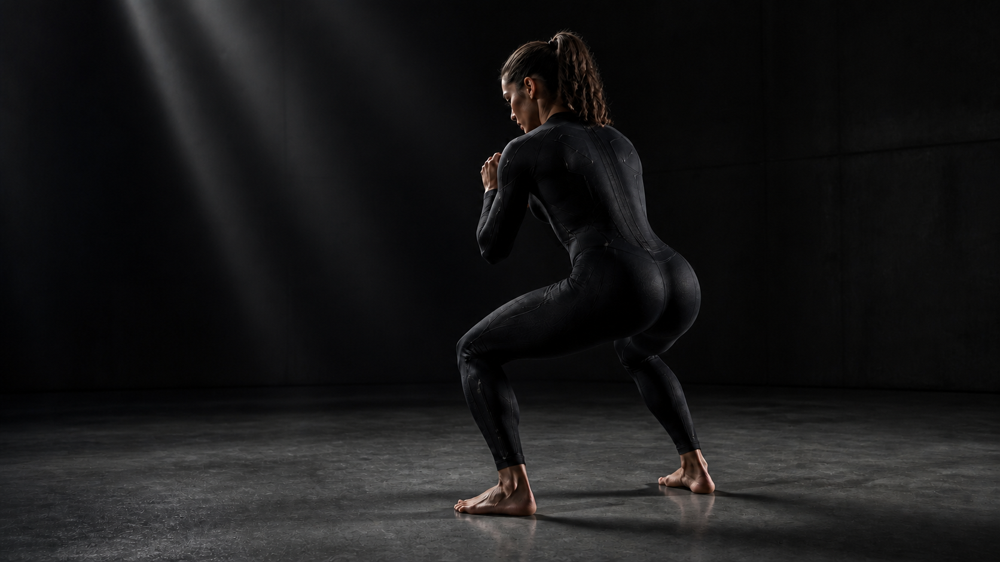
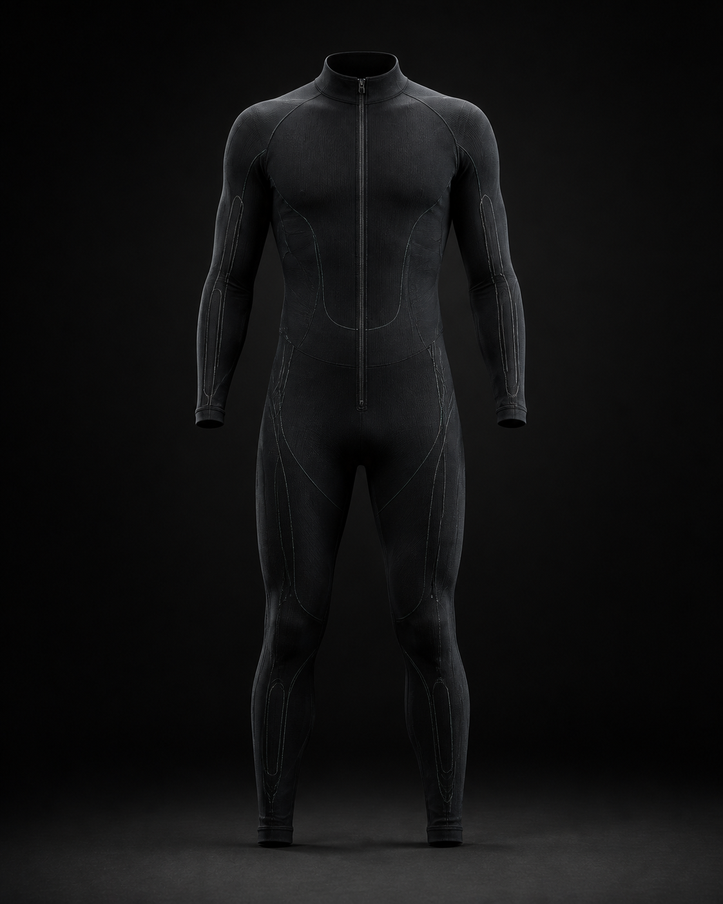
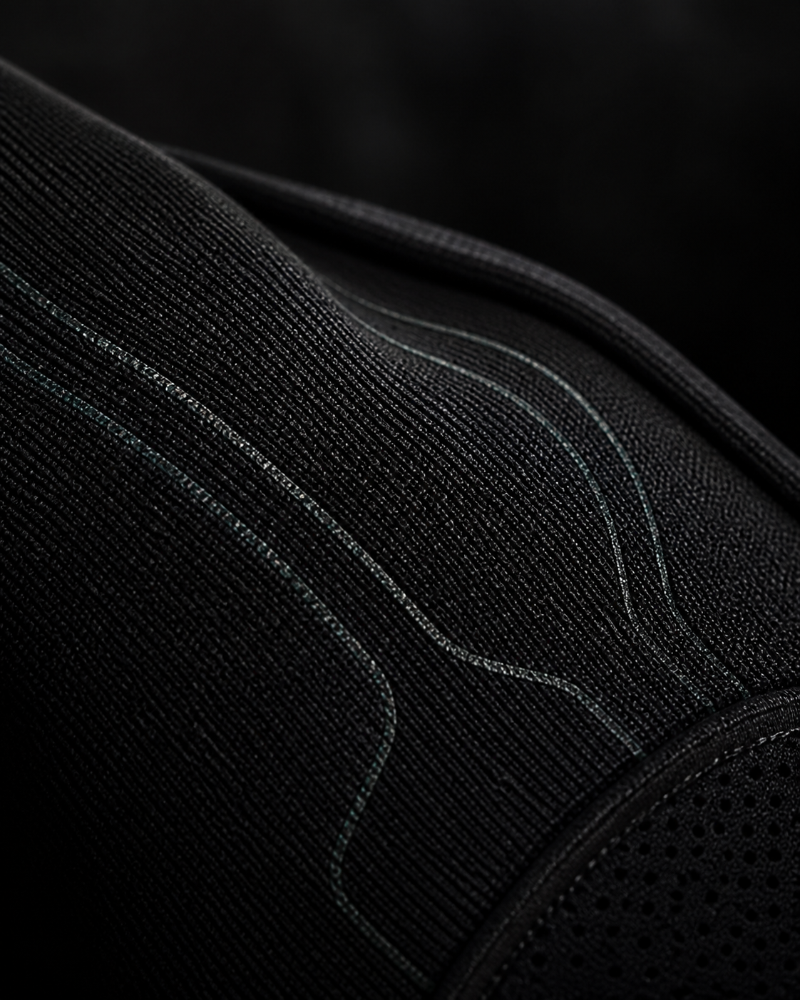

Wear it.
The garment moves as you do. Stretch across the textile becomes a signal.

A strength coach, built into what you wear.
Smart compression training wear designed to notice the small changes that turn a good rep into a risky one.
See the systemThe missed moment
Fatigue does not announce itself. It moves your depth, your balance, your brace—one small change at a time. Most training technology tells you what happened after the workout.
Demson is being built for the moment that still matters: while you are moving.
From fabric to motion
Stretch across the garment becomes a live model of how your body moves under load.
The garment moves as you do. Stretch across the textile becomes a signal.
Movement is interpreted as a changing shape through each phase of a rep.
The goal is coaching that reaches you while the set is still happening.
The garment is the sensor
There is no camera rig to clear space for. No hard sensor array to lock into place. We are building movement sensing into the compression system itself.

01 Integrated sensor pathways 02 Compression architecture 03 Movement zonesBuilt into the material
A breathable technical knit is where the sensing begins. The goal is hardware that feels as natural as the base layers already in your gym bag.

From one rep to the next
Demson is designed to make your training history more useful: not just what you lifted, but how the movement held up as the set went on.
Where we are headed
Validating the sensor-to-signal chain around a squat.
Building the feedback layer around the reps where form shifts.
Expanding from one movement zone to a complete view of strength work.
Demson / In development
We are building motion intelligence for the people who show up, lift hard, and want to keep doing it for a long time.
Build with us